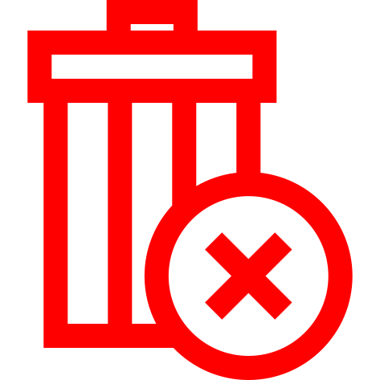

<div [ngSwitch]="type"
     (click)="onClick()">

  <div *ngSwitchCase="'blueIcon'" (mouseenter)="mouseOver = true" (mouseleave)="mouseOver = false"
       class="{{classes}}  py-3  relative w-full flex cursor-pointer items-center flex-row justify-center gap-4">
    
    <p [ngClass]="mouseOver ? '' : ''" class="text-size-min italic">{{text}}</p>
  </div>

  <div *ngSwitchCase="'delete'" class="{{classes}} h-[30px] w-[30px] relative z-10 items-center flex text-size-base deleteButton"
       [ngClass]="isDisabledBlocked ? 'opacity-60 cursor-not-allowed' : isDisabledProgress ? 'opacity-60 cursor-progress' : 'cursor-pointer'">
    
    
  </div>

  <div *ngSwitchCase="'icon'" class="{{classes}} h-full items-center flex text-size-base"
       [ngClass]="isDisabledBlocked ? 'opacity-60 cursor-not-allowed' : isDisabledProgress ? 'opacity-60 cursor-progress' : 'cursor-pointer'">
    
  </div>

</div>


